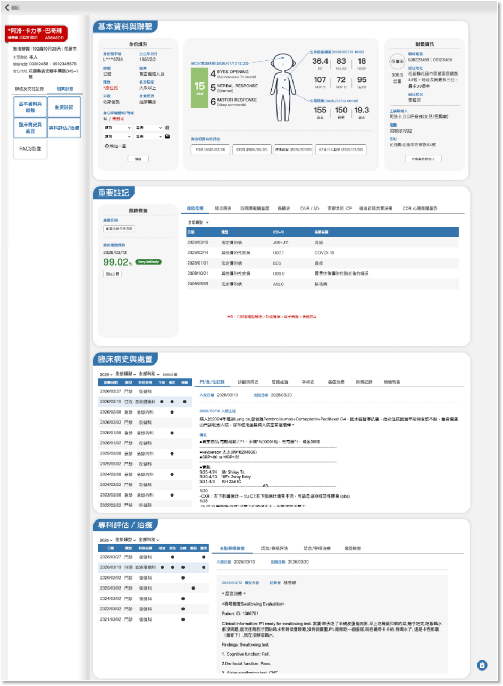
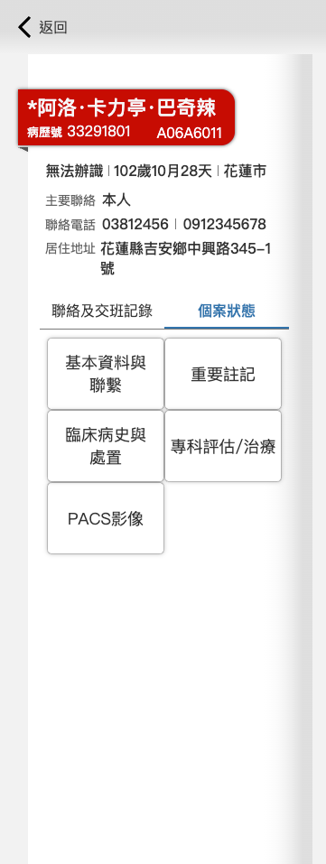
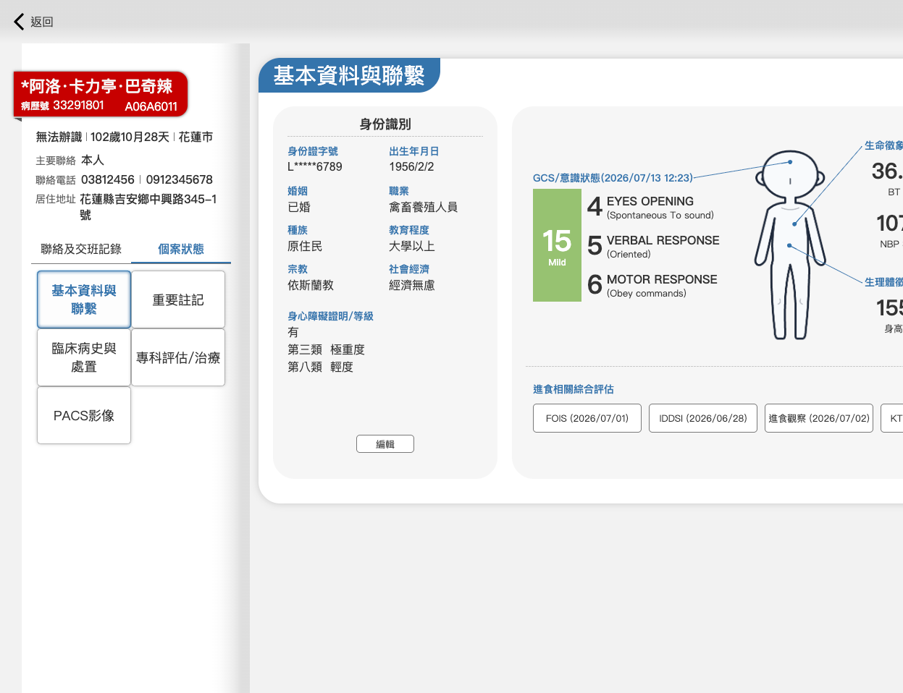

版型及互動說明：
- 基本框架套用版型二。
- 使用者可由下列幾種方式進入個案管理頁面的個案狀態單元
- Navigation點擊”個案狀態管理”，並查詢任一病歷資料，預設顯示個案狀態單元。
- 點擊全站任一個”個案狀態”按鈕或TAB即可進入。
- 版面左側可切換個案資訊兩大單元
- 聯絡及交班記錄
- 個案狀態
- 個案狀態資訊面版控制器
- 點擊區塊按鈕可控制右側對應的4個資訊區塊顯示或隱藏。
- 所有區塊資料同一時間更新，但預設先顯示”基本資料與聯繫”及”重要註記”兩區資訊，其他區塊先隱藏。
15:00:01 ～ 24:00:00
00:00:01 ～ 06:00:00
06:00:01 ～ 11:00:00
11:00:01 ～ 15:00:00
07:00:00
12:00:00
16:00:00


取HIS資料區間
名單更新時間
系統完成後，每日三個時間點完成更新待排及已派案名單的HIS病歷資料：
- 每日 07:00:00 更新前一日 15:00:01 至當日 06:00:00 的開單資料。
- 每日 12:00:00 更新當日 06:00:01 至 11:00:00 的開單資料。
- 每日 16:00:00 更新當日 11:00:01 至 15:00:00 的開單資料。
07:00:00
12:00:00
16:00:00
03-1-1 個案狀態管理
頁面內容說明：
1. 左側資訊區


功能
內容

說明
HIS資料更新時間
yyyy/mm/dd hh:mm:ss

病人現況資訊
病患姓名

1. 資料來源：HIS 住院醫囑
2. 色塊卡片樣式包覆
3. 㡳色依病患嚴重度燈號
病歷號

同上
住院病人床號

同上
性別
1.資料來源：HIS病人基本資料檔
2.資料內容：男/女/無法辨識
年齡估算
1.資料來源：HIS病人基本資料檔
2.資料內容：由出生年月日換算成歲月天
居住行政區
1.資料來源：第一次取自HIS病人基本資料檔，若吞嚥系統中本人聯絡資訊有更新則視為最新資料。
2. 顯示地址中法定的鄉、鎮、市、區等行政區層級
聯絡資訊
主要聯絡人
1.資料來源：第一次取自HIS病人基本資料檔，若吞嚥系統中本人或主要聯絡人有變更則以吞嚥系統資料為最新。
2. 預設為本人
聯絡電話
同上
居住地址
同上
右側內容控制器
基本資料與聯繫
1. 點選後決定右側對應的基本資料與聯繫區塊顯示或隱藏。
2. 預設顯示，按鈕呈現 Focus 狀態。
重要註記
1. 點選後決定右側對應的重要註記區塊顯示或隱藏。
2. 預設顯示，按鈕呈現 Focus 狀態。
臨床病史與處置
1. 點選後決定右側對應的臨床病史與處置區塊顯示或隱藏。
2. 預設不顯示，按鈕呈現 unFocus 狀態。
專科評估/治療
1. 點選後決定右側對應的專科評估/治療區塊顯示或隱藏。
2. 預設不顯示，按鈕呈現 unFocus 狀態。
PACS影像
點選後另開視窗瀏覽 PACS WEB 功能。
* 系統開發過程，依階段性交付的各式名單功能，提供相對應的HIS病歷資料。
- 第一優先：透過病歷號、姓名或身份證的即時查詢，將資料由HIS存一份到吞嚥系統的資料庫。
- 第二優先：主動吞檢名單
- 第三優先：門診待排名單
- 第四優先：住院待排名單

2. 右側分為四個內容區塊，請參閱對應的文件編號
- 01基本資料與聯繫
- 02重要註記
- 03臨床病史與處置
- 04專科評估/治療
HIS 資料更新時間：2026/09/09 07:00:00
HIS 資料更新時間：2026/09/09 07:00:00
03-1-1個案狀態管理01框架及基本資料與聯繫